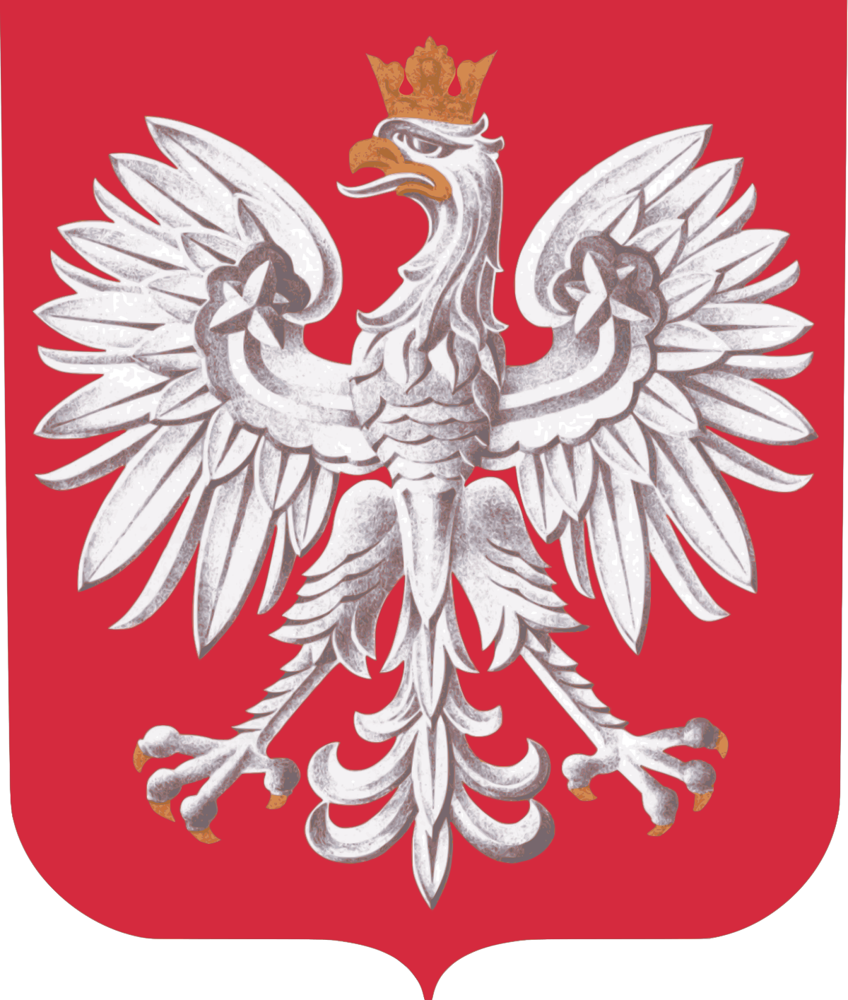

O stronie
Na tej stronie dowiesz się o historii Polski, o jej polityce oraz o jej geografii. Zobaczysz symbole naszego państwa.
Oto symbole narodowe
Flaga:

Godło:
Hymn:
Historia Polski
Dzieje Polski rozpoczynają się wraz z panowaniem pierwszego historycznego władcy Mieszka I, który w 966 roku przyjął chrzest. Jego syn Bolesław Chrobry w 1025 roku został koronowany na pierwszego króla Polski. Do 1138 roku Polska jako monarchia patrymonialna rządzona była przez władców z dynastii Piastów, którzy nie licząc wydzielanych juniorom dzielnic i przejściowych okresów podziału, zachowywali zwierzchność nad całym jej terytorium.W efekcie tzw. ustawy sukcesyjnej księcia Bolesława Krzywoustego ziemie polskie uległy na 150 lat pogłębiającemu się rozbiciu dzielnicowemu. Próby ponownego zjednoczenia zaczęto podejmować pod koniec XIII w., a ostatecznie zostały one uwieńczone koronacją Władysława Łokietka w 1320 roku. Dynastia Piastów wygasła po śmierci jego syna, Kazimierza Wielkiego w 1370, który nie pozostawił legalnego następcy. Rządy w Polsce przejęli Andegawenowie (Ludwik Węgierski i Jadwiga), a następnie — poprzez ślub Jadwigi z wielkim księciem litewskim Jagiełłą — królowie z dynastii Jagiellonów. W 1569 Korona Królestwa Polskiego weszła w stały związek z Wielkim Księstwem Litewskim. Na mocy unii zawartej w Lublinie powstała Rzeczpospolita Obojga Narodów, którą od 1573 rządzili władcy powoływani drogą wolnej elekcji. Państwo to było jednym z największych terytorialnie organizmów politycznych Europy. Po pokoju z Rosją zawartym w Polanowie w 1634 osiągnęło powierzchnię 990 tys. km². W tym okresie w Rzeczypospolitej wykształcił się swoisty system polityczny, oparty na dominacji liczniejszej niż w innych krajach europejskich szlachty i systemie rządów parlamentarnych. Złoty wiek państwa przypadł na okres rządów ostatnich Jagiellonów. Ostatecznie zakończył się on wraz z wojnami połowy XVII wieku. W kolejnym stuleciu pogrążona w anarchii Rzeczpospolita zaczęła popadać w silną zależność od Rosji, a następnie zniknęła z mapy Europy w rezultacie trzech rozbiorów. Samodzielne państwo polskie nie istniało aż do XX wieku, choć okresowo pojawiały się jego szczątkowe formy, takie jak Księstwo Warszawskie, Królestwo Polskie czy Wielkie Księstwo Poznańskie. Pełne odrodzenie Polski nastąpiło dopiero po I wojnie światowej, kiedy w sytuacji upadku mocarstw rozbiorowych powstała II Rzeczpospolita. Istniała ona do 1939, czyli do początku II wojny światowej. We wrześniu 1939 ziemie polskie zajęte zostały przez III Rzeszę i ZSRR. Dopiero od 1944 rozpoczęło się ich stopniowe przejmowanie przez oddziały sowieckie i utworzonego u ich boku Ludowego Wojska Polskiego. Po zakończeniu wojny Polska znalazła się za tzw. żelazną kurtyną, a władzę w niej przejęli komuniści. W 1952 państwo przemianowano na Polską Rzeczpospolitą Ludową. Do 1989 panował w niej system partyjny, w którym przewodnią rolę pełniła Polska Zjednoczona Partia Robotnicza. Oprócz niej występowały jeszcze ugrupowania satelickie — ZSL i SD. Upadła ona ostatecznie w efekcie procesu określanego mianem Jesieni Narodów. Wybory parlamentarne w 1989 zapoczątkowały procesy demokratyzacji i reform gospodarczych, które umożliwiły III Rzeczypospolitej wstąpienie do NATO (1999), a następnie do Unii Europejskiej (2004).


Polityka Polski
Konstytucja
Konstytucja Rzeczypospolitej Polskiej to najważniejszy akt prawny w Polsce, uchwalony 2 kwietnia 1997 przez Zgromadzenie Narodowe i zatwierdzony w ogólnonarodowym referendum 25 maja 1997. Został ogłoszony w Dzienniku Ustaw: Dz.U. z 1997 r. nr 78, poz. 483, wszedł w życie 17 października 1997. Konstytucja złożona jest z preambuły i 13 rozdziałów, w tym 243 artykuły. Konstytucja określa charakter ustroju państwowego. Ukazuje sposób zorganizowania i działania głównych organów państwa. Definiuje status prawny obywateli i sposób ich wpływania na politykę państwa.
Władza ustawodawcza
Władzę ustawodawczą stanowi dwuizbowy parlament (Sejm 460 posłów, Senat 100 senatorów) wybierany w bezpośrednich, powszechnych i tajnych wyborach parlamentarnych na 4-letnią kadencję od dnia pierwszego posiedzenia. Jego głównym zadaniem jest stanowienie prawa poprzez uchwalanie ustaw konstytucyjnych i zwykłych, w tym budżetowej, a także ratyfikowanie umów międzynarodowych. W wyjątkowych przypadkach opisanych w Konstytucji możliwe jest rozwiązanie Sejmu (a jednocześnie Senatu) przed upływem końca kadencji przez głowę państwa lub uchwałę przyjętą większością 2/3 głosów. Jego przedłużenie możliwe jest jedynie w czasie stanu wyjątkowego lub do 3 miesięcy po zakończeniu kadencji. Organizację Sejmu i Senatu, porządek prac oraz sposób powoływania i działalności ich organów określają regulaminy uchwalone przez każdą z izb. Sejm i Senat ze swego grona wybierają marszałka i wicemarszałków, którzy tworzą prezydium. Marszałek Sejmu jest najwyższym przedstawicielem izby niższej parlamentu, przewodniczy obradom Sejmu oraz reprezentuje go na zewnątrz. Sejm i Senat powołują również komisje parlamentarne: stałe, które mają za zadanie przygotowywanie projektów w dziedzinie ustawodawstwa i kontroli (obecnie działa ich 39: 25 w Sejmie i 14 w Senacie) oraz nadzwyczajne, powoływane w celu rozpatrzenia konkretnych spraw izby i ulegające rozwiązaniu po wykonaniu zadania. Specjalnym rodzajem komisji nadzwyczajnej jest sejmowa komisja śledcza. Posłowie i senatorowie mogą tworzyć kluby parlamentarne składające się z co najmniej 15 parlamentarzystów, a posłowie ponadto koła poselskie, dla utworzenia których potrzeba 3 posłów. Przewodniczący klubów parlamentarnych wraz z członkami prezydium tworzą Konwent Seniorów, organ zapewniający współdziałanie klubów poselskich w sprawach związanych z działalnością i tokiem prac izb w polskim parlamencie. Posłom i senatorom w okresie sprawowania przez nich mandatu przysługuje immunitet.


Geografia
Polska zajmuje 9. miejsce w Europie pod względem powierzchni oraz 8. pod względem liczby ludności. Na świecie Polska zajmuje 70. miejsce pod względem powierzchni i 35. miejsce pod względem liczby ludności.
Długość granic Polski wynosi 3511 km, w tym 440 km przypada na granicę morską (linia wybrzeża Morza Bałtyckiego, która nie jest linią granicy państwa, wynosi 770 km). Do obszaru kraju wlicza się także morze terytorialne, a specjalne prawa przysługują Polsce w tzw.
strefie przyległej.
Graniczy z następującymi państwami:
od zachodu:
Niemcy (467 km)
od południa:
Czechy (796 km)
Słowacja (541 km)
od wschodu:
Ukraina (535 km)
Białoruś (418 km)
od północy:
Litwa (104 km)
Rosja (z obwodem królewieckim, 210 km).
Po roku 1945 dokonano drobnych korekt granic Polski. Ostatnia korekta granic miała miejsce w 2005 roku, ze Słowacją.
W wymiarze północ-południe Polska rozciąga się na długości 649 km, to jest 5°50'. Powoduje to różnicę w długości trwania dnia między północną i południową częścią Polski. Latem na północy dzień jest dłuższy o ponad godzinę niż na południu, zimą odwrotnie. W wymiarze wschód-zachód rozpiętość Polski wynosi 689 km, co w mierze kątowej daje 10°02'.
Powoduje to, że w dniach równonocy na zachodnim krańcu Polski Słońce zachodzi o 40 minut później niż na wschodnim.
Polska leży w strefie czasu środkowoeuropejskiego, jest to czas słoneczny południka 15° przebiegającego m.in. na zachód od Jeleniej Góry, Zielonej Góry i Gorzowa Wielkopolskiego oraz na wschód od Szczecina. Zimą obowiązuje czas środkowoeuropejski (UTC+01:00), natomiast latem (od ostatniej niedzieli marca do ostatniej niedzieli października) czas środkowoeuropejski letni (UTC+02:00).
Geometryczny środek Polski znajduje się w Piątku koło Łęczycy. Najstarszy (1775) obliczony geometryczny środek Europy znajduje się w Suchowoli koło Sokółki, w województwie podlaskim. Przez Polskę przebiega również granica pomiędzy kontynentalnym blokiem Europy Wschodniej a rozczłonkowaną przez morza wewnętrzne Europą Zachodnią.